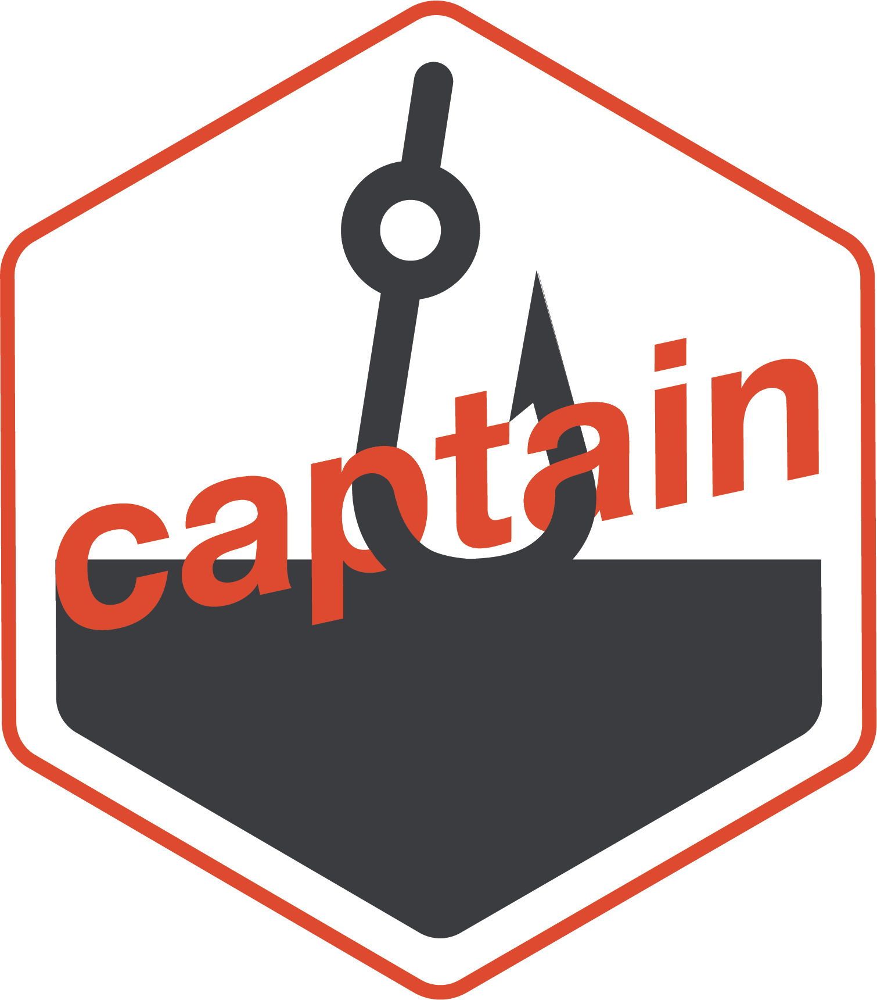

Rprecommit 
Running R pre-commit hooks
Overview
Pre-commit hooks are scripts that run automatically before a commit is finalized in Git. They’re used to catch issues early by enforcing checks like code formatting, linting, or running tests before changes are committed.
Rprecommit is a package that allows you to run pre-commit checks in R.
Installation
The latest version can be installed from GitHub as follows:
# install.packages("pak")
pak::pak("alexym1/Rprecommit")Usage
Initialize pre-commit framework
Rprecommit::install_precommit()Run hooks
Rprecommit::run_precommit()Add hooks
Editing the .pre-commit-config file using Rprecommit::edit_precommit_config():
Code of conduct
Please note that this project is released with a Contributor Code of Conduct. By participating in this project you agree to abide by its terms.